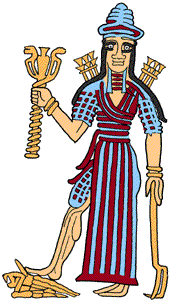

The Challenge -
Ishtar in the city of Uruk

After killing the demon Humbaba, Gilgamesh, the king of Uruk, dressed in his royal robes. He looked so beautiful that the goddess Ishtar fell in love with him. However, Gilgamesh wanted nothing to do with the goddess as Ishtar destroyed the things she loved. Ishtar was so angry about being rejected that she rushed from Uruk up to Heaven. There she got her father, Anu, to give her the fiery Bull of Heaven (the constellation Taurus) so that she could punish Gilgamesh. The Bull of Heaven destroyed many of the people of Uruk but Gilgamesh and Enkidu discovered the bull's weak spot and killed it. Ishtar was left on the wall of Uruk hopping and stamping her feet in rage.
|
|